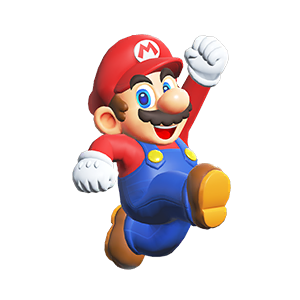
Mario travaille comme plombier avec son petit frère Luigi. Il est
toujours prêt à aider.
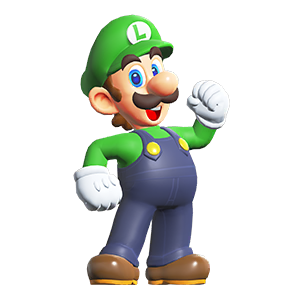
Bien qu'ils soient des frères jumeaux, Luigi est plus grand et
un peu plus jeune que Mario.
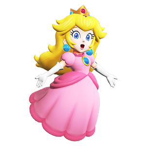
La princesse du Royaume Champignon, elle souhaite toujours le
bonheur de tous.
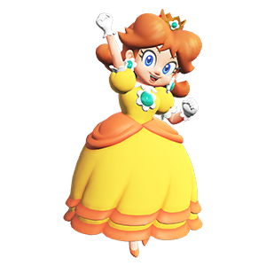
Daisy est la princesse de Sarasaland. Elle est toujours enjouée,
joyeuse et vive !
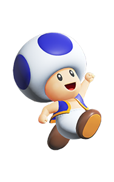
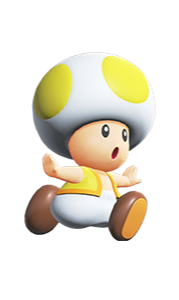
Les Toads sont des résidents du Royaume Champignon, et les
champignons sont leur têtes, pas de grands chapeaux !
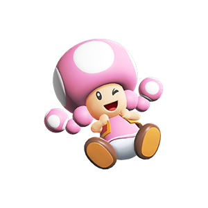
Toadette est une habitante du Royaume Champignon. Elle possède deux
tresses roses magnifiques.
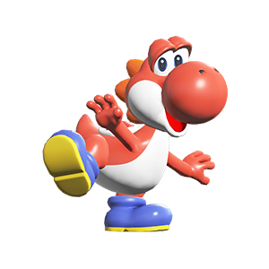
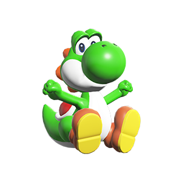
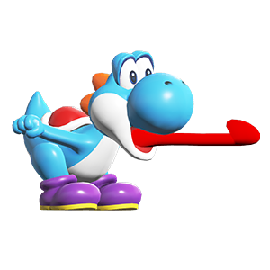
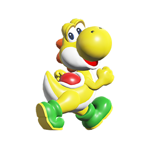
Les Yoshis sont tous extrêmement détendus. Ils laissent même Mario
et ses amis monter sur eux.
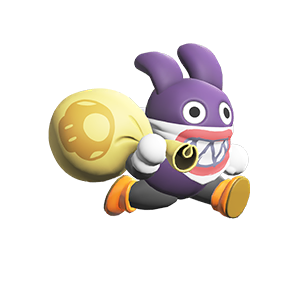
Carottin n'est pas vraiment un ennemi ou un allié, mais juste
quelqu'un qui garde un œil sur Mario et ses amis...